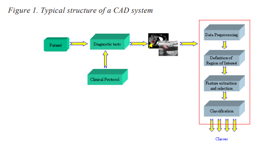

<html>
<head>
    <title>Assignement3</title>
      <meta charset="UTF-8">
    <meta name="viewport" content="width=device-width, initial-scale=1.0">
         <link rel="stylesheet" href="style.css">
     <meta charset="utf-8">
    <meta name="description" content="free Web tutorials">
    <meta name="keywords" content="HTML,CSS, JavaScript">
    <meta name="author" content="john Doe">
     </head>
    <body>
        <center>
            
             <h4>Chapter XIV</h4><br>
            <h1>Clinical Decision
Support Systems:</h1>
            <h2>Basic Principles
and Applications in
Diagnosis and Therapy</h2>
            <div class="paragrapg" style="text-align: center;">
            <p>Spyretta Golemati, National Technical University of Athens, Greece</p>
            <p>Stavroula Mougiakakou, National Technical University of Athens, Greece</p>
            <p>John Stoitsis, National Technical University of Athens, Greece</p>
            <p>Ioannis Valavanis, National Technical University of Athens, Greec</p>
            <p>Konstantina S. Nikita, National Technical University of Athens, Greece</p>
            <br>
                <h3>Abstract<hr></h3>  </div></center>
        <div class="par1">
            <p style="text-align: justify;"><i>This chapter introduces the basic principles of Clinical Decision Support (CDS)
systems. CDS systems aim to codify and strategically manage biomedical knowledge
to handle challenges in clinical practice using mathematical modelling tools, medical
data processing techniques and Artificial Intelligence (AI) methods. CDS systems
cover a wide range of applications, from diagnosis support to modelling the possibility
of occurrence of various diseases or the efficiency of alternative therapeutic schemes,
using not only individual patient data but also data on risk factors and efficiency of
available therapeutic schemes stored in databases. Computer-Aided Diagnosis (CAD)
systems can enhance the diagnostic capabilities of physicians and reduce the time
required for accurate diagnosis. Modern Therapeutic Decision Support (TDS) systemsmake use of advanced modelling techniques and available patient data to optimise and
individualise patient treatment. CDS systems aim to improve the overall health of the
population by improving the quality of healthcare services, as well as by controlling
the cost-effectiveness of medical examinations and treatment.
</i></p>
      </div>
        <div class="introduction">
            <center>
                <h3>Introduction<hr></h3>
            </center>
            <div class="par2" style="text-align: justify;">
            <p>Advances in the areas of computer science and Artificial Intelligence (AI) allow the
development of computer systems that support clinical diagnostic or therapeutic
decisions based on individualised patient data (Berner & Ball, 1998; Shortliffe, Perrault,
Wiederhold, & Fagan, 1990). Clinical Decision Support (CDS) systems aim to codify and
strategically manage biomedical knowledge to handle challenges in clinical practice
using mathematical modelling tools, medical data processing techniques and AI methods
(Bankman, 2000). CDS systems cover a wide range of applications, from diagnosis
support to modelling the possibility of occurrence of various diseases or the efficiency
of alternative therapeutic schemes, using not only individual patient data but also data
on risk factors and efficiency of available therapeutic schemes stored in databases.</p>
<p>To diagnose a disease, a physician is usually based on the clinical history and physical
examination of the patient, visual inspection of medical images, as well as the results of
laboratory tests. In some cases, confirmation of the diagnosis is particularly difficult
because it requires specialisation and experience, or even the application of interventional
methodologies (e.g., biopsy). Interpretation of medical images (e.g., Computed Tomography, Magnetic Resonance Imaging, Ultrasound, etc.) usually performed by radiologists, is often limited due to the non-systematic search patterns of humans, the presence
of structure noise (camouflaging normal anatomical background) in the image, and the
presentation of complex disease states requiring the integration of vast amounts of image
data and clinical information. Computer-Aided Diagnosis (CAD), defined as a diagnosis
made by a physician who uses the output from a computerised analysis of medical data
as a “second opinion” in detecting lesions, assessing disease severity, and making
diagnostic decisions, is expected to enhance the diagnostic capabilities of physicians
and reduce the time required for accurate diagnosis.</p>
<p>The first CAD systems were developed in the early 1950s and were based on production
rules (Shortliffe, 1976) and decision frames (Engelmore & Morgan, 1988). More complex
systems were later developed, including blackboard systems (Engelmore & Morgan,
1988) to extract a decision, Bayes models (Spiegelhalter, Myles, Jones, & Abrams, 1999)
and Artificial Neural Networks (ANNs) (Haykin, 1999). Recently, a number of CAD
systems have been implemented to address a series of diagnostic problems. CAD
systems are usually based on biosignals, including the electrocardiogram (ECG), electroencephalogram (EEG), electromyogram (EMG) or medical images from a number of
modalities, including radiography, CT, MRI, and US imaging</p>
<p>In therapy, the selection of the optimal therapeutic scheme for a specific patient is a
complex procedure that requires sound judgement based on clinical expertise, and
knowledge of patient values and preferences, in addition to evidence from research.
</p>
<p>Usually, the procedure for the selection of the therapeutic scheme is enhanced by the
use of simple statistical tools applied to empirical data. In general, decision making about
therapy is typically based on recent and older information about the patient and the
disease, whereas information or prediction about the potential evolution of the specific
patient disease or response to therapy is not available. Recent advances in hardware and
software allow the development of modern Therapeutic Decision Support (TDS) systems, which make use of advanced simulation techniques and available patient data to
optimise and individualise patient treatment, including diet, drug treatment, or radiotherapy treatment. In addition to this, CDS systems may be used to generate warning
messages in unsafe situations, provide information about abnormal values of laboratory
tests, present complex research results, and predict morbidity and mortality based on
epidemiological data.</p>
                
<p>The aim of this chapter is to describe the main principles of CDS systems, including
diagnostic and therapeutic decision support, and to pres.ent examples of such systems
developed in the Biomedical Simulations and Imaging Laboratory, Faculty of Electrical
and Computer Engineering, National Technical University of Athens.</p></div>
        </div>
        <div class="Computer-Aided Diagnosis">
        <center>
        <h3>Computer-Aided Diagnosis<hr></h3>
        </center>
        <p style="text-align: justify;">CAD systems aim to enhance the ability to detect pathological structures in medical
examinations and to support evaluation of pathological findings during the diagnostic
procedure. In the following, the fundamental theory for the development of CAD systems
is presented along with two examples of CAD systems.</p>
           
        <div class="Basic Principles" style="text-align: justify;">
            
        <h4> Basic Principles<hr></h4>
        <p>The typical structure of a CAD system is shown in Figure 1. Diagnostic tests, which are
determined by the clinical protocol, include imaging tests (CT, MRI, US, etc.), laboratory
tests and tests for recording tissue electrical activity (e.g., ECG, EEG, EMG, etc.). Input
in the form of plain text (e.g., text describing the clinical symptoms of a patient) may also
be used in a CAD system. The main modules of a CAD system include</p>
            <ul style="align-items: center">
                <li>Data pre-processing</li><br>
                <li>Definition of regions of interest (ROIs)</li><br>
                <li> Extraction and selection of characteristic features</li><br>
                <li>Classification</li><br>

            </ul>
            
            
        </div>
            <div class="line">
        <div class="data" style="text-align: justify;">
            <h4><em>Data Pre-Processing</em><hr></h4>
            <p1>The data pre-processing module aims to improve the quality of data through the
application of methods for denoising (application of mean filters, median filters, etc.),
resampling (linear interpolation, spline interpolation, etc.) and, in the case of images,
enhancing image contrast (histogram equalisation, wavelet transform, etc.) (Bankman,
2000)</p1><br><br>
            
            
<p1>Data pre-processing is critical, especially when the quality of data is low. The computational cost of data pre-processing depends on the size of the data, but it is significantly
lower than other processing tasks, including automatic segmentation and feature
extraction.</p1>
            </div>
        <div class="defination" style="text-align: justify;" >
            <h4><em>Definition of Regions of Interest</em><hr></h4>
            <p1  text-align: justify;>Within the Region-of-Interest-(ROI) definition module, possible pathological structures
appearing in patient biosignals recordings or medical imaging data are defined. Regions
corresponding to lesions (e.g., tumours, cysts, etc.) can be detected from medical images.
Definition of ROIs can be performed using manual and semi-automatic methodologies
where the user interacts with the system in order to define a possible pathological region
or fully automated methodologies where suspect regions are detected with appropriate
digital image processing techniques (Bankman, 2000).</p1><br><br>
            <p1>An example of semi-automatic ROI definition is seeded region growing. The user selects
a point on the structure of interest and, subsequently, new points are added through an
iterative recursive procedure using similarity and spatial connectivity criteria. Furthermore, a number of techniques have been implemented for automatic definition (segmentation) of known anatomic structures from medical images. Many of these structures rely
on a priori shape information of the organ or structure of interest to segment it out
(Cootes, Edwards, & Taylor, 2001). Region-based methods, for example, fuzzy connectedness (Udupa & Samarsekera, 1996), use some homogeneity statistics coupled with lowlevel image features, like intensity, texture, histograms, and gradient to assign pixels to
objects. If two pixels are similar in value and connected to each other in some sense, they
are assigned to the same object. These approaches do not consider any shape information. Hybrid segmentation techniques have also been proposed by some researchers
(Chen & Metaxas, 2000). These approaches seek to exploit the local neighbourhood
information of region-based techniques, and the shape and higher level information of
boundary-based techniques.</p1></div>
        <div class="extraction" style="text-align: justify;">
            <h4><em>Extraction and Selection of Characteristic Features</em><hr></h4>
            <p1>“Characteristic features” are a group (vector) of quantitative indices extracted after
processing the patient data. The aim of feature extraction and selection is to reliably
discriminate between pathological and physiological structures or to characterise a
pathological structure (e.g., benign or malignant tumour). Characteristic features may be
derived from measurements of mean image intensity or image texture, shape analysis, and
so on.</p1><br><br>
            <p1>It is often desirable to reduce the dimension of the vector of characteristics extracted from
patient data (Jain, Duin, & Jianchang, 2000). The selection of the most robust characteristics allows maximisation of classification accuracy and minimisation of system complexity</p1><br><br>
            <p1>Ideally, a method for feature selection would examine all 2N (N: the number of characteristic features) different combinations of characteristic features and would find the
optimal combination that satisfies the previous criteria. The disadvantage of this
exhaustive search technique is its high computational cost which may be prohibitive
even for relatively small values of N. Statistical methods, including ANalysis Of VAriance
(ANOVA), have been used for feature selection in a number of applications. ANOVA
compares the means of two or more groups of data and returns the probability for the null
hypothesis that the means of the groups are equal (Furlong, Lovelace & Lovelace, 2000).
Other techniques, based on heuristic or random search methods, attempt to compensate
computational complexity with classification accuracy. Feature selection is usually
achieved through the following steps:</p1><br><br>
            <ul>
            <li>Production of a candidate feature subgroup</li><br>
            <li>Evaluation of the eligibility of the candidate subgroup through an appropriate
evaluation function</li><br>
            <li>Procedure termination after satisfaction of a predefined criterion</li><br>
            <li>Confirmation of the validity of the selected feature subgroup</li><br></ul>
            <p1>Methodologies such as Genetic Algorithms (GAs) may be applied to feature selection
problems. GAs are adaptive heuristic search methods which may be used to solve
complex pattern recognition and classification problems (Goldberg, 1989). They are based on the evolutionary ideas of natural selection and genetic processes of biological
organisms. As the natural populations evolve according to the principles of natural
selection and “survival of the fittest” first laid down by Charles Darwin, so by simulating
this process GAs are able to evolve solutions to real-world problems, if they have been
suitably encoded (Holland, 1975). Feature selection through GA-based search along with
an ANN classifier has been used to classify “difficult-to-diagnose” microcalcifications
from mammography (Dhawan, Chitre, Kaiser-Bonasso, & Moskowitz, 1996). The use of
similar procedures has also been reported for the recognition of skin tumours and
endothelial cells (Yamani, Khiani & Farag, 1997).
</p1></div></div>
        </div>
    </body>
</html>
